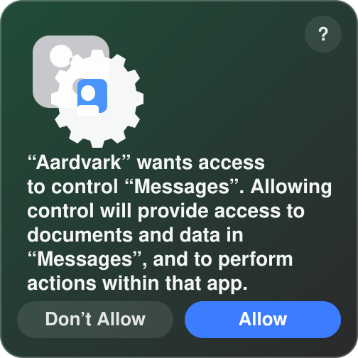

Telegram, WhatsApp, local Messages, and MCP in one compact local console.
Cloud scopeTelegramWhatsAppMessages
Visible chats
0
Background API
Telegram
Inspect Cloud-folder chats, forwarded upstream APIs, and the local upstream sign-in state.
Cloud access
Cloud visibility rule
Important
Only chats placed in the special Cloud folder on the upstream Telegram account are exposed here and to downstream proxy clients. If a chat is missing, add it to that folder first.
Visible chats
Cloud folder
Messages
chat
Pick a Cloud chat to inspect recent history.
Forwarded upstream
Methods passed through
Handled locally
Proxy-owned methods
MTProto downstream access
Telethon-compatible
Turn the MTProto proxy on when you want downstream Telegram clients to connect through this desktop app. When enabled, the client connection details and issued session strings appear below.
Listener control
Enabled
Telegram app credentials
Keychain-backed
1. Open my.telegram.org/apps and open the Telegram API development tools page.
2. Sign in with the Telegram account you want this proxy to use.
3. If Telegram asks you to create an app first, enter any local-only app title and short name, then continue.
4. Copy the App api_id and App api_hash into the fields below.
5. These credentials stay only on this Mac and are stored locally in Keychain. Once sign-in succeeds, the Telegram session is also saved there automatically.
6. Request a Telegram login code, then finish with the SMS/app code and, if your account uses it, the 2FA password.
7. Only chats inside the special Cloud folder will be visible to downstream proxy clients.
WhatsApp
Inspect Cloud-labeled chats, QR login state, and the local Baileys bridge.
Needs QR
Cloud visibility rule
Label scoped
Only chats carrying the special Cloud label inside WhatsApp are exposed here and through MCP. If a chat is missing, apply that label first.
Visible chats
Cloud label
Messages
chat
Scan the QR and label chats with Cloud to inspect recent history.
WhatsApp pairing
Linked devices
Open WhatsApp -> Linked devices -> Link a device on your phone and scan the QR shown below. Once connected, add the Cloud label to any chats you want visible here.
Messages
Inspect local Messages chats, including iMessage, SMS, and RCS threads, plus automation state and history availability from the Messages database.
Local access
Messages is currently off
Opt in
Enable Messages when you want Telethon Proxy to read local Messages chats or send through the Messages app. macOS will ask for Messages control access, and history reads may also require Full Disk Access.

All chats
Local Messages
Visible downstream set
MCP scope
Only the chats listed here are passed downstream. MCP chat listing, history, updates, and sends are restricted to this visible set.
Visible chats
Downstream Messages
Messages
chat
Pick a Messages chat to inspect recent local history.
Messages access
On or off
macOS access
Local only
The proxy uses Messages automation for chat enumeration and sending, plus ~/Library/Messages/chat.db for history reads. macOS may require granting Automation and Full Disk Access to the app or background service that runs this proxy.
MCP
Local Model Context Protocol endpoint, hidden bearer-token management, and the Telegram, WhatsApp, and Messages resources available through it.